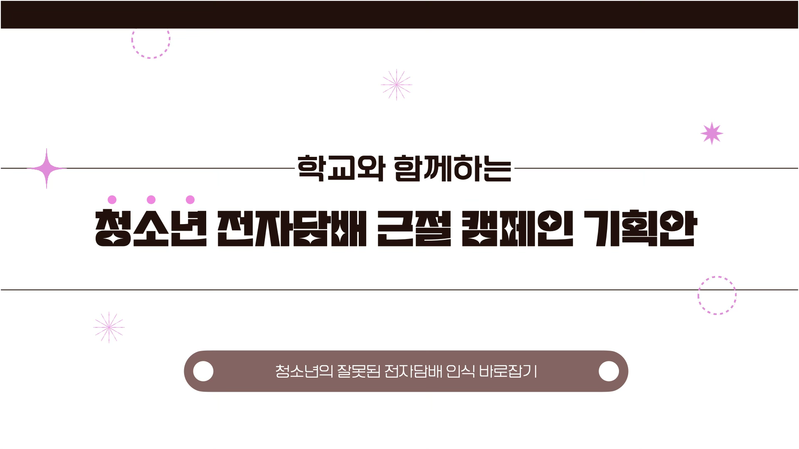
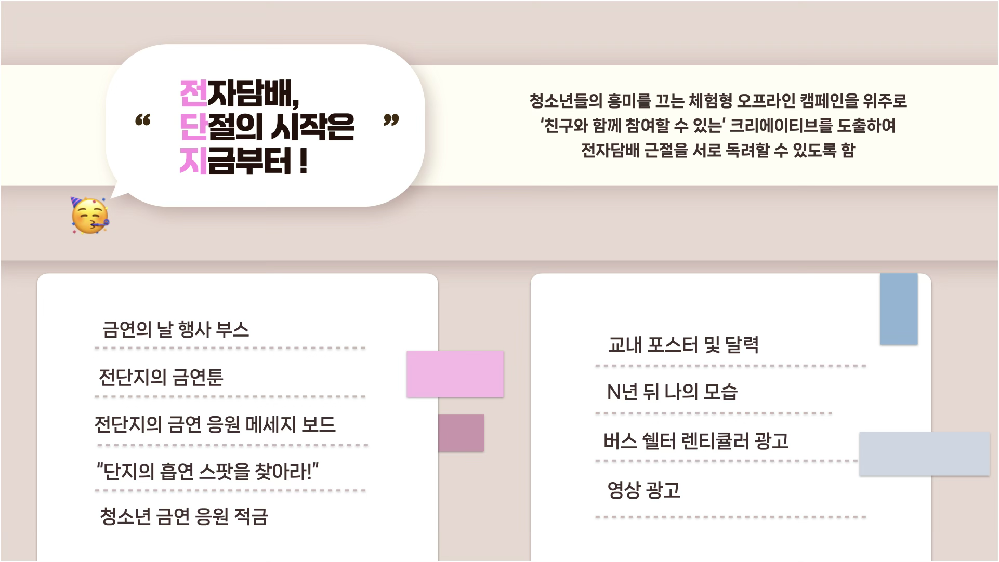
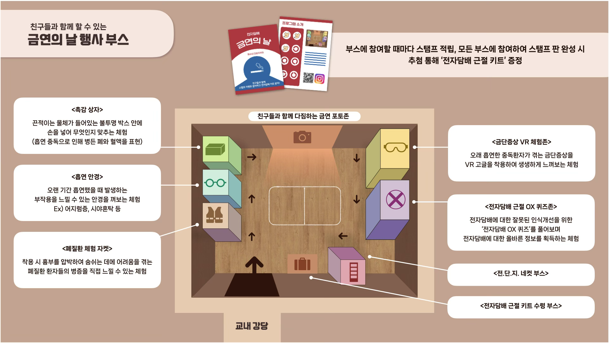

<!doctype html><html lang="ko"><head><meta charset="utf-8"><meta name="viewport" content="width=device-width,initial-scale=1"><title>프로젝트 · 박해인</title><style>
:root{--blue:#2e65c5;--muted:#7d8593;--pale:#f2f6fc;--line:#dce5f2}*{box-sizing:border-box}html{scroll-behavior:smooth}body{margin:0;color:#17191e;font-family:Arial,'Apple SD Gothic Neo','Malgun Gothic',sans-serif}a{color:inherit;text-decoration:none}.back{position:fixed;top:22px;left:26px;z-index:10;background:white;border:1px solid var(--line);border-radius:50%;width:44px;height:44px;display:grid;place-items:center;font-size:25px}.back:focus-visible,a:focus-visible{outline:3px solid var(--blue)}.slide{height:100svh;min-height:640px;padding:70px 7vw 40px;display:flex;align-items:center;justify-content:center;position:relative}.slide:nth-child(even){background:var(--pale)}.canvas{width:min(100%,1440px);aspect-ratio:16/9;max-height:100%;display:flex;flex-direction:column;justify-content:center}.eyebrow{font-size:12px;color:var(--blue);letter-spacing:2px;font-weight:700;margin:0 0 18px}h1{font-size:clamp(36px,4.4vw,68px);letter-spacing:-2px;line-height:1.2;margin:0 0 24px}h2{font-size:clamp(28px,3vw,45px);line-height:1.35;letter-spacing:-1.5px;margin:0 0 24px}h3{font-size:22px;margin:0 0 16px}p{color:var(--muted);font-size:16px;line-height:1.8;margin:0 0 20px}.columns{display:grid;grid-template-columns:1fr 1fr;gap:34px;align-items:center}.hero-grid{grid-template-columns:44% 56%;gap:0}.hero-copy{padding-right:45px}.placeholder{min-height:280px;background:#e4edf9;display:flex;align-items:center;justify-content:center;flex-direction:column;gap:18px;border-radius:22px;color:#8da8cf}.placeholder b{font-size:80px;font-weight:400}.placeholder span{font-size:11px;letter-spacing:2px}.hero-image{height:400px}.meta{display:flex;gap:28px;margin-top:34px}.meta div{font-size:12px;color:var(--muted);line-height:1.9}.meta b{display:block;color:var(--blue);font-size:10px;letter-spacing:1px}.card{background:white;border:1px solid #e9eff7;border-radius:22px;padding:32px}.card .placeholder{min-height:210px}.cards{display:grid;grid-template-columns:1fr 1fr;gap:24px}.statement{font-size:clamp(24px,2.7vw,40px);color:var(--blue);line-height:1.5;letter-spacing:-1px}.flow{display:grid;grid-template-columns:1fr 40px 1fr;gap:18px;align-items:center;margin:12px 0}.flow span{color:var(--blue);text-align:center}.flow .card{padding:24px}.flow p{margin:0}.wide-image{height:300px;margin-top:15px}.page-no{position:absolute;bottom:24px;right:4vw;color:#a5afbd;font-size:11px;letter-spacing:2px}.footer-links{display:flex;justify-content:space-between;margin-top:32px;font-size:14px;color:var(--blue)}
@media(max-width:760px){.slide{height:auto;min-height:100svh;padding:100px 7vw 65px}.canvas{aspect-ratio:auto}.columns,.cards{grid-template-columns:1fr}.hero-copy{padding:0 0 28px}.hero-image{height:280px}.flow{grid-template-columns:1fr;gap:10px}.flow span{transform:rotate(90deg)}.placeholder{min-height:200px}.card{padding:24px}h1{font-size:38px}.meta{margin-top:20px}.back{top:16px;left:16px}.wide-image{height:230px}.page-no{bottom:20px}}
@media(prefers-reduced-motion:reduce){html{scroll-behavior:auto}}

.slide{height:100vh;min-height:0;overflow:auto;padding:75px 9vw 40px;display:block}.canvas{width:100%;max-width:none;aspect-ratio:auto;max-height:none;min-height:100%;justify-content:center}.canvas.columns{display:grid}.canvas h1,.canvas h2{font-weight:500}.hero-image{height:45vh;min-height:180px}.wide-image{height:40vh}.back{width:38px;height:38px;font-size:22px}
@media(max-width:760px){.slide{height:100vh;min-height:0;padding:80px 8vw 40px}.canvas{min-height:100%}.hero-image{height:30vh;min-height:160px}.wide-image{height:30vh}.placeholder{min-height:160px}.card .placeholder{min-height:140px}.canvas h1{font-size:32px}.canvas h2{font-size:27px}.canvas p{font-size:14px}.cards{gap:15px}.card{padding:20px}.page-no{position:static;display:block;text-align:right;margin-top:20px}.slide{position:relative}}

/* Continuous case study, with project-specific light backgrounds */
body{background:var(--pale)}.slide,.slide:nth-child(even){height:auto;min-height:0;overflow:visible;background:transparent;padding:65px 9vw;display:block}.slide:first-of-type{padding-top:110px;padding-bottom:60px}.slide:last-of-type{padding-bottom:100px}.canvas,.canvas.columns{min-height:0;max-height:none;aspect-ratio:auto;width:100%;max-width:1180px;margin:0 auto}.canvas.columns{display:grid}.hero-image{height:380px}.slide h1{font-weight:650;font-size:clamp(36px,4vw,60px)}.slide h2{font-weight:700;font-size:clamp(28px,2.7vw,40px);margin-bottom:36px}.slide h3{font-weight:650}.slide p{font-size:15px}.eyebrow{color:var(--blue);font-weight:700;font-size:11px}.card{border:0;border-radius:26px;padding:40px;box-shadow:0 6px 30px #19243d03}.placeholder{background:var(--soft);color:var(--blue);border-radius:20px;min-height:250px}.card .placeholder{min-height:220px}.wide-image{height:410px;margin:25px 0 0}.columns{gap:45px}.hero-grid{gap:0}.cards{gap:25px}.flow{margin-bottom:25px}.flow .card{padding:30px}.page-no{display:none}.meta{background:white;border-radius:18px;padding:20px 25px;display:inline-flex}.meta b{color:var(--blue)}.statement{color:var(--blue)}.footer-links{padding-top:30px;justify-content:center}.footer-links a{border:1px solid var(--soft);background:white;padding:14px 24px;border-radius:99px;color:var(--blue)}
@media(max-width:760px){.slide,.slide:nth-child(even){height:auto;min-height:0;padding:36px 7vw;overflow:visible}.slide:first-of-type{padding-top:60px}.canvas,.canvas.columns{min-height:0}.canvas.columns{display:grid;grid-template-columns:1fr}.hero-image{height:260px}.hero-copy{padding-bottom:25px}.card{padding:25px}.placeholder{min-height:180px}.card .placeholder{min-height:180px}.wide-image{height:260px}.columns{gap:24px}.slide h1{font-size:35px}.slide h2{font-size:27px;margin-bottom:25px}.slide p{font-size:14px}.meta{margin-top:15px}.flow .card{padding:24px}.slide:last-of-type{padding-bottom:60px}}

.case-intro,.case-content{width:min(1180px,82%);margin:auto;padding:80px 0 20px}.case-intro{padding-top:100px}.case-intro h1{font-size:clamp(32px,4vw,60px);line-height:1.3;font-weight:650}.case-lead{max-width:720px;margin:0 0 40px}.case-content{padding-top:55px;padding-bottom:80px}.case-content h2{font-size:clamp(26px,3vw,40px);font-weight:650}.case-description{max-width:760px;margin-bottom:35px}.asset-card{margin:0 0 28px;background:white;border-radius:24px;padding:30px;overflow:hidden;box-shadow:0 8px 35px #18203804}.asset-card img{display:block;width:100%;height:auto;object-fit:contain}.asset-card figcaption{font-size:12px;color:#9296a0;margin-top:18px;line-height:1.6}.phone-asset img{max-height:600px;width:auto;max-width:100%;margin:auto}.case-intro>.asset-card{margin-top:35px}.case-content .footer-links{margin-top:40px}@media(max-width:760px){.case-intro,.case-content{width:86%;padding-top:45px}.asset-card{padding:15px;border-radius:17px}.case-intro h1{font-size:33px}.asset-card figcaption{font-size:10px}.case-content h2{font-size:27px}}

/* Tobacco-prevention case study */
.tobacco-case{--case-blue:#5c9ee8;--case-bg:#f3f6f9;--case-text:#1c222a;background:var(--case-bg);color:var(--case-text);min-height:100vh;padding:90px 0 100px}
.tobacco-inner{width:min(1020px,82%);margin:0 auto}.tobacco-eyebrow{margin:0 0 17px;color:var(--case-blue);font-size:10px;font-weight:700;letter-spacing:.5px}.tobacco-case h1{margin:0;font-size:clamp(29px,3.3vw,47px);font-weight:700;line-height:1.35;letter-spacing:-.055em}.tobacco-summary{display:grid;grid-template-columns:1fr 1fr;gap:55px;margin:38px 0 52px}.tobacco-summary p{font-size:13px;line-height:1.8;margin:0;color:#4e5864}.tobacco-summary .en{color:#8b949f}
.tobacco-meta{display:inline-grid;grid-template-columns:repeat(3,auto);gap:28px;background:#fff;border-radius:15px;padding:17px 24px;margin-bottom:22px}.tobacco-meta div{font-size:11px;color:#343b44}.tobacco-meta b{display:block;color:var(--case-blue);font-size:9px;margin-bottom:5px}
.tobacco-card{background:#fff;border-radius:27px;padding:42px;margin-top:22px;box-shadow:0 8px 30px #3c629407}.tobacco-card h2{font-size:clamp(23px,2.2vw,32px);line-height:1.5;letter-spacing:-.045em;margin:0 0 28px}.tobacco-card h2 strong{color:var(--case-blue)}.tobacco-card p{font-size:13px;line-height:1.8;color:#65707d}.tobacco-overview{display:grid;grid-template-columns:38% 62%;gap:30px;align-items:center}.overview-copy h3,.interview h3{font-size:13px;color:#89929d;margin:0 0 14px}.overview-copy ul{margin:0;padding-left:18px;color:#434c57;font-size:13px;line-height:1.9}.overview-images,.deliverables{display:grid;grid-template-columns:1fr 1fr;gap:12px}.overview-images figure,.deliverables figure{margin:0;border:1px solid #edf0f3;border-radius:15px;padding:9px;background:#fafafa;overflow:hidden}.overview-images img,.deliverables img{display:block;width:100%;height:100%;object-fit:contain}.overview-images figure{aspect-ratio:16/10}
.interview-intro{max-width:720px;margin:-12px 0 28px}.interview-cards{display:grid;grid-template-columns:repeat(3,1fr);gap:14px}.voice-card{display:grid;grid-template-columns:46px 1fr;gap:15px;align-items:start;background:#f6f7f8;border-radius:17px;padding:21px}.voice-avatar{width:46px;height:46px;border-radius:50%;display:grid;place-items:center;background:#dceafa;color:var(--case-blue);font-size:12px;font-weight:750}.voice-card blockquote{margin:0}.voice-card blockquote strong{display:inline;box-decoration-break:clone;-webkit-box-decoration-break:clone;background:#dcecff;color:#317ccf;padding:2px 4px;font-size:13px;line-height:1.75}.voice-card blockquote p{font-size:11px;line-height:1.65;margin:10px 0 0;color:#69737e}.voice-card cite{display:block;font-size:9px;font-style:normal;color:#a0a7af;margin-top:9px}
.solution-head{display:grid;grid-template-columns:1fr 1.4fr;gap:35px;align-items:end;margin-bottom:24px}.solution-head h2{margin:0}.solution-head p{margin:0}.direction-labels{display:grid;grid-template-columns:1fr 46px 1.55fr;gap:12px;margin-bottom:9px}.direction-labels span:first-child{color:#b2b8bf}.direction-labels span:last-child{grid-column:3;color:var(--case-blue)}.direction-labels span{font-size:15px;font-weight:700}.direction-board{display:grid;gap:10px}.direction-row{display:grid;grid-template-columns:1fr 46px 1.55fr;gap:12px;align-items:stretch}.direction-problem,.direction-solution{border-radius:16px;padding:20px 23px;display:flex;align-items:center;font-size:13px;line-height:1.6}.direction-problem{background:#f1f2f3;color:#5d6670}.direction-arrow{display:grid;place-items:center;color:#c2c8ce;font-size:22px}.direction-solution{background:#fff;border:1px solid #e6edf4;color:#3f4853;box-shadow:0 5px 18px #385a8008}.direction-solution b{color:var(--case-blue)}.deliverables{display:grid;grid-template-columns:1fr 1fr;gap:12px;margin-top:26px}.deliverables figure{aspect-ratio:16/9;background:#f8f8f7}.tobacco-back{display:flex;justify-content:center;margin-top:42px}.tobacco-back a{border:1px solid #d8e1e9;background:#fff;border-radius:99px;padding:13px 24px;font-size:12px;color:#536171}
@media(max-width:760px){.tobacco-case{padding:60px 0}.tobacco-inner{width:86%}.tobacco-summary{grid-template-columns:1fr;gap:15px;margin:25px 0 30px}.tobacco-summary .en{display:none}.tobacco-meta{width:100%;grid-template-columns:1fr;gap:12px}.tobacco-card{padding:24px;border-radius:20px}.tobacco-overview{grid-template-columns:1fr}.overview-images,.deliverables,.interview-cards{grid-template-columns:1fr}.solution-head{grid-template-columns:1fr;gap:8px}.direction-labels{display:none}.direction-row{grid-template-columns:1fr}.direction-arrow{transform:rotate(90deg);height:24px}.direction-problem,.direction-solution{padding:17px}.tobacco-card h2{font-size:23px}}
</style></head><body>
<main id="case-study"></main><script>const projects=[['맛난이 챌린지','CONTENT CAMPAIGN','못생긴 농산물은 맛도 없을까요?','농산물의 외형에 대한 편견을 일상의 식사 이야기로 풀어낸 캠페인.'],['위뮤즈 오프라인 마케팅','EXPERIENCE MARKETING','좋은 공연을 더 편하게 즐길 수 없을까요?','관객의 불편에서 출발해 공연 경험과 플랫폼 홍보를 연결한 제안.'],['꼬모냉장고 SNS 마케팅','SNS MARKETING','소비자에게 어떤 메시지가 닿을까요?','데이터 분석과 콘텐츠 기획·운영 경험.'],['전자담배 근절 캠페인','CAMPAIGN PLANNING','청소년의 일상에서 어떤 접점을 찾을 수 있을까요?','타깃의 생활을 분석한 캠페인 기획.'],['통계청 교육영상','EDUCATIONAL CONTENT','어려운 정보를 어떻게 쉽게 전달할까요?','학습자의 관점에서 구성한 교육영상.']];const n=Number(new URLSearchParams(location.search).get('id'));const i=Number.isInteger(n)&&n>=1&&n<=5?n-1:0,p=projects[i];document.title=p[0]+' · 박해인';
const assets=[['17.png','18.png','19.png'],['13.png','14.png','15.png','16.png'],['2.png','1.png','4.png','5.png','6.png','7.png','3.png','8.png','ccomo1.png','ccomo2.png','ccomo3.png'],['9.png','10.png','11.png','12.png'],['20.png','21.png','22.png'],[]];
const themes=[['#E56548','#F5F1E8','#FBE2D9'],['#7955E8','#F0EEFA','#E8E0FF'],['#298658','#EDF2ED','#DCEFE4'],['#3475D5','#EDF2F8','#DCE9FA'],['#D97726','#FBF0E8','#F8DFC9']];
const t=themes[i];['--blue','--pale','--soft'].forEach((v,k)=>document.documentElement.style.setProperty(v,t[k]));
const captions=[['캠페인 소개 · MBC 모두의 챌린지','일상의 식사로 보여주는 맛난이 챌린지','영상 장면'],['위뮤즈 오프라인 마케팅 기획','공연 관람 환경에 대한 조사','버스킹 서비스 기획','서비스 활성화 방안'],['2025 성과 보고서','SNS 운영 개선 제안','경쟁 브랜드 SNS 현황','검색 데이터 분석','SNS 마케팅 전략 보고서','SNS 콘텐츠 비교 분석','콘텐츠 노출 성과','주요 이슈 및 개선점','SNS 콘텐츠 예시 1','SNS 콘텐츠 예시 2','SNS 콘텐츠 예시 3'],['전자담배 근절 캠페인 기획안','캠페인 메시지','캠페인 실행안','콘텐츠 적용 예시'],['교육영상 · 돼지의 하루','교육영상 장면 1','교육영상 장면 2'],[]];
const photo=(file,n)=>`<figure class="asset-card ${file.startsWith('ccomo')?'phone-asset':''}"><figcaption>${captions[i][n]}</figcaption></figure>`;
const defaultCase=`<section class="case-intro"><p class="eyebrow">${p[1]}</p><h1>${p[0]}</h1><p class="case-lead">${p[3]}</p>${assets[i].length?photo(assets[i][0],0):'<div class="placeholder">프로젝트 이미지 준비 중</div>'}</section><section class="case-content"><p class="eyebrow">PROJECT STORY</p><h2>${p[2]}</h2><p class="case-description">${i===1?'관람 환경의 불편을 줄이고, 현장 경험을 플랫폼 홍보로 연결하는 기획을 제안했습니다. 아래 자료는 기획안이며 제안한 효과는 실제 운영 성과와 구분됩니다.':p[3]}</p><div class="asset-gallery">${assets[i].slice(1).map((file,n)=>photo(file,n+1)).join('')}</div><div class="footer-links"><a href="index.html#projects">프로젝트 목록</a></div></section>`;
const tobaccoCase=`<article class="tobacco-case"><div class="tobacco-inner"><header><p class="tobacco-eyebrow">TARGET RESEARCH</p><h1>청소년은 전자담배를<br>왜 가볍게 받아들였을까요?</h1><div class="tobacco-summary"><p>청소년의 생활과 흡연 인식을 살펴보기 위해 통계자료와 뉴스 기사, 인터뷰 내용을 분석했습니다. 기존의 형식적인 예방 교육이 실제 행동 변화로 이어지기 어려운 이유를 찾고, 일상에서 만나는 캠페인 방향을 설정했습니다.</p><p class="en">To understand how teenagers perceive e-cigarettes, we reviewed statistics, news coverage and interview responses, then translated those findings into an experience-led campaign.</p></div><div class="tobacco-meta"><div><b>Period</b>23.09.01 – 23.11.03</div><div><b>Target</b>10대 청소년</div><div><b>Purpose</b>전자담배 인식 개선</div></div></header>
<section class="tobacco-card"><h2>형식적인 예방 교육보다 <strong>일상적인 접점과<br>직접 참여하는 경험</strong>이 필요했습니다.</h2><div class="tobacco-overview"><div class="overview-copy"><h3>OVERVIEW</h3><ul><li>청소년의 왜곡된 전자담배 인식 개선</li><li>기존 흡연 예방 교육의 한계 보완</li><li>일상적인 공간과 또래 관계를 활용한 전략</li></ul></div><div class="overview-images"><figure></figure><figure></figure></div></div></section>
<section class="tobacco-card"><p class="tobacco-eyebrow">IN-DEPTH INTERVIEW</p><h2>청소년들은 전자담배와 예방 캠페인을<br><strong>어떻게 받아들이고 있을까요?</strong></h2><p class="interview-intro">청소년의 하루와 흡연 계기, 기존 캠페인에 대한 인식을 질문했습니다. 답변에서 반복해서 나타난 학교·친구·체험이라는 키워드를 캠페인 방향에 반영했습니다.</p><div class="interview-cards"><article class="voice-card"><span class="voice-avatar">01</span><blockquote><strong>“학교와 학원에서<br>대부분의 시간을 보내요.”</strong><p>쉬는 시간에는 웹툰을 보거나 친구들과 게임을 하며 시간을 보내요.</p><cite>일상과 주요 활동 공간</cite></blockquote></article><article class="voice-card"><span class="voice-avatar">02</span><blockquote><strong>“친구의 권유로<br>처음 전자담배를 피웠어요.”</strong><p>달콤한 향 때문에 일반 담배보다 부담이 적다고 느꼈어요.</p><cite>흡연 계기와 또래 영향</cite></blockquote></article><article class="voice-card"><span class="voice-avatar">03</span><blockquote><strong>“예방 캠페인은 지루해서<br>기억에 남지 않아요.”</strong><p>보고 듣는 교육보다 직접 참여할 수 있는 활동이 더 좋아요.</p><cite>기존 교육에 대한 반응</cite></blockquote></article></div></section>
<section class="tobacco-card"><div class="solution-head"><h2>인터뷰에서 찾은 문제를<br><strong>세 가지 전략</strong>으로 연결했습니다.</h2><p>청소년의 생활 동선과 또래 관계, 기존 교육에 대한 반응을 바탕으로 캠페인의 접점과 참여 방식을 구체화했습니다.</p></div><div class="direction-labels"><span>Key Finding</span><span>Campaign Direction</span></div><div class="direction-board"><div class="direction-row"><div class="direction-problem">대부분의 시간을 학교와 학원에서 보냅니다.</div><div class="direction-arrow">→</div><div class="direction-solution">청소년과 가장 가까운 공간을 활용하는 <b>&nbsp;학교 중심 캠페인</b></div></div><div class="direction-row"><div class="direction-problem">친구의 권유와 또래 분위기가 행동에 영향을 줍니다.</div><div class="direction-arrow">→</div><div class="direction-solution">함께 대화하고 반응하도록 유도하는 <b>&nbsp;집단 대상 캠페인</b></div></div><div class="direction-row"><div class="direction-problem">일방적인 예방 교육은 지루하고 기억에 남지 않습니다.</div><div class="direction-arrow">→</div><div class="direction-solution">보고 듣는 것을 넘어 직접 참여하는 <b>&nbsp;체험 중심 캠페인</b></div></div></div><div class="deliverables"><figure></figure><figure></figure></div></section><div class="tobacco-back"><a href="index.html#projects">프로젝트 목록</a></div></div></article>`;
document.querySelector('#case-study').innerHTML=i===3?tobaccoCase:defaultCase;
</script></body></html>
